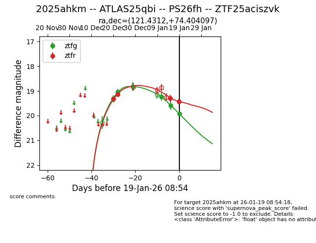
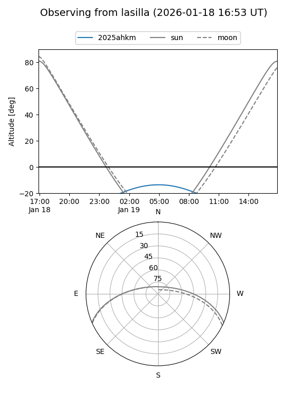
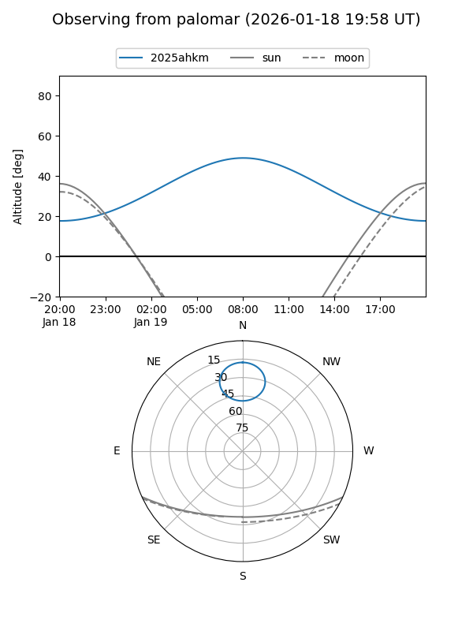
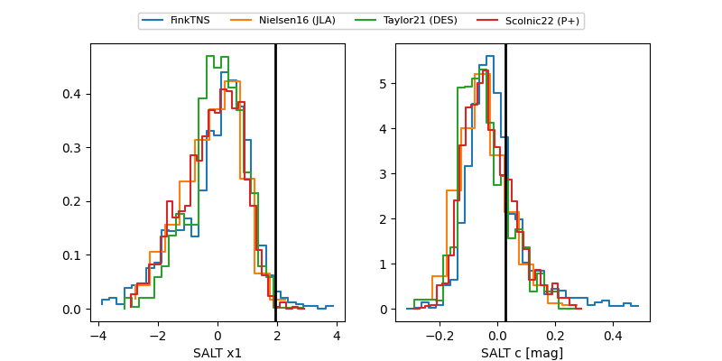

2025ahkm
Target 2025ahkm at 2026-01-21 07:55
Aliases and brokers:
FINK: link
Lasair: link
ALeRCE: link
TNS: link
YSE: link
alt names
ZTF25aciszvk (ztf,fink_ztf)
2025ahkm (tns,yse)
ATLAS25qbi (atlas)
PS26fh (panstarrs)
Coordinates:
equatorial (ra, dec) = 121.4312,+74.40410
equatorial (HMS+DMS) = 08:05:43.49,+74:24:14.75
galactic (l, b) = (140.2330,+31.02434)
Flags:
Photometry:
last ztfg=19.92, ztfr=19.56
6 ztfg, 5 ztfr detections
Lightcurve

Visibility


Additional plots
